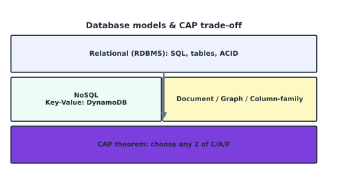

Database Administration#
Learning Objectives#
Compare relational vs. NoSQL databases.
State the ACID guarantees.
Apply the CAP theorem.
Administer Amazon RDS and Amazon DynamoDB.
Plan database backup and point-in-time restore.
Relational vs. NoSQL#
{kind=link}

Fig. 14 Relational DBs offer ACID + SQL; NoSQL scales out with flexible schemas. CAP theorem forces a choice.#
Model |
Query |
Schema |
Scale |
Example |
|---|---|---|---|---|
Relational (RDBMS) |
SQL |
rigid (tables, constraints) |
vertical/HA |
MySQL, PostgreSQL, Aurora |
NoSQL |
API/key lookups |
flexible/document |
horizontal |
DynamoDB, MongoDB |
NoSQL sub-models: key-value, document, column-family, graph — each optimized for a kind of workload (sessions, catalogs, time-series, relationships).
ACID#
ACID is the set of four guarantees for a reliable transaction.
Letter |
Meaning |
|---|---|
Atomicity |
all-or-nothing |
Consistency |
only valid states |
Isolation |
concurrency without interference |
Durability |
once committed, survives failure |
Money transfer: debit + credit must both happen (atomic), total stays equal (consistency), concurrent transfers don’t corrupt (isolation), and the result persists (durability).
ACID = Atomicity, Consistency, Isolation, Durability
CAP Theorem#
A distributed system cap_theorem can provide at most two of: Consistency, Availability, Partition tolerance.
Since partitions happen on real networks, P is mandatory; real systems pick CP or AP.
P is mandatory, so you choose: Consistency-vs-Availability during a partition.
Choice |
Trade |
AWS example |
|---|---|---|
CP |
may be unavailable during partitions |
DynamoDB strongly-consistent reads |
AP |
may return stale data |
DynamoDB eventually-consistent reads, Cassandra |
Amazon RDS#
RDS runs managed relational engines (MySQL, PostgreSQL, MariaDB, Oracle, SQL Server, Aurora). AWS manages the engine; you manage the database and app.
You manage |
AWS manages |
|---|---|
DB engine params, schemas, users, access |
patching the engine, backups, failover, HA |
Feature |
Notes |
|---|---|
Instance class |
vCPU/RAM; reserved/convertible pricing options |
Parameter group |
engine tunables (DB-specific) |
Option group |
add-ons (e.g., Oracle Advanced) |
Storage |
GP, IOPS (io1/io2); grows up to 64 TiB |
Backup retention |
automated nightly snapshot + PITR (0–35 days) |
Multi-AZ = a synchronous standby in another AZ, automatic failover (DR/HA, not read scaling). Read replicas (MySQL/PostgreSQL/Aurora) scale reads and can be cross-region.
Amazon DynamoDB#
DynamoDB = fully-managed NoSQL key-value/document store, single-digit-millisecond latency.
Concept |
Detail |
|---|---|
Table |
collection of items |
Item |
one record (attributes) |
Key |
partition key (+ optional sort key) → controls partitioning |
Capacity mode |
On-Demand (per request) or Provisioned (RCU/WCU, auto-scaling) |
Secondary index |
GSI (independent partition/sort key) or LSI (same partition, diff sort) |
Consistency |
strongly consistent or eventually consistent reads |
DynamoDB is regionally resilient; for global resilience use global tables (multi-master, multi-region), and enable PITR (continuous backups, 35-day window).
Database Backup#
Backups protect against deletion, corruption, and ransomware — verify with restore tests.
RDS#
Automated backups → point-in-time recovery (PITR) + daily snapshot (0–35 days retention).
Manual snapshots → indefinite (not deleted until you delete them).
First automated snapshot is full; subsequent are incremental.
DynamoDB#
On-demand backup (manual snapshot, indefinite).
Continuous backup / PITR (last 35 days, continuous change records).
Restore is only as good as the last test: restore into a temp copy and run the app before trusting the plan.
Checkpoint#
Q1. Give one property of ACID that a NoSQL key-value store often weakens, and why.
Answer. Isolation/Consistency are weakened (eventual consistency) to favor availability and partition tolerance per CAP.
Q2. In CAP, if you must keep the system available during a network partition, what is the cost?
Answer. You accept stale possibly-inconsistent reads (availability at the cost of strong consistency).
Q3. What is the difference between an RDS read replica and a Multi-AZ standby?
Answer. Read replicas scale reads (and can be cross-region); a Multi-AZ standby is for failover/HA only and is not used for normal read traffic.
Q4. How does the partition key determine where an item is stored?
Answer. DynamoDB hashes the partition key → maps the item to a partition; the sort key keeps items in that partition ordered.
Q5. True or false — deleting an RDS instance also deletes its automated snapshots.
Answer. False for the manual snapshots you created (they remain); automated snapshots are deleted along with the instance.
Sources#
The concepts in this chapter are summarized from the following authoritative sources:
Amazon RDS User Guide: https://docs.aws.amazon.com/AmazonRDS/latest/UserGuide/
Amazon DynamoDB Developer Guide: https://docs.aws.amazon.com/amazondynamodb/latest/developerguide/
CAP theorem: Gilbert & Lynch, ‘Brewer’s conjecture’, 2012
Distributed Systems: Principles and Paradigms (Tanenbaum & van Steen)